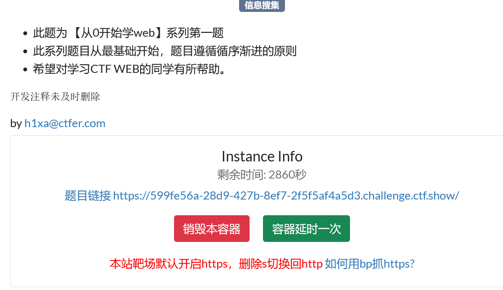
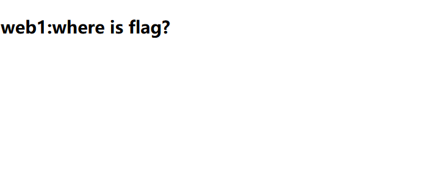

web1


第一步：观察页面内容
页面上只显示了一句话：“webl:where is flag?”，没有任何输入框或按钮。
这说明 Flag 要么是静态写死的，要么需要通过某种交互触发。
第二步：分析前端代码
- 这段代码定义了一个
NavigatorUAData的覆盖（override）逻辑。它的作用是：当网页尝试获取你的浏览器 User-Agent 信息时，强制修改返回值，伪装成特定的浏览器版本。 - 意图猜测：题目作者可能想考察是否懂得修改请求头（User-Agent）来绕过这个检测，或者进入某个隐藏的逻辑分支。
第三步：验证请求与响应（图2）
- 请求 (Request)：你的 User-Agent 目前被设置为了
test123。 - 响应 (Response)：服务器依然返回了包含 Flag 的 HTML 页面。
在这个特定的题目中，修改 User-Agent 似乎并不是获取 Flag 的必要条件。
Flag 是直接通过后端程序输出在 HTML 注释里的。
3. 总结与建议
- 本题解法：直接查看 Response 响应包，找到 HTML 注释中的
ctfshow{...}字符串并提交。 - 举一反三：如果下次遇到类似题目，且修改 User-Agent 后没有返回 Flag： 继续在图1的代码中寻找其他过滤条件（比如检查特定路径、特定 Cookie 或 Referer）。 尝试在 Burp Suite 或浏览器开发者工具中拦截请求，修改 User-Agent 为代码逻辑中预期的浏览器（如 Chrome），然后再发送请求看看是否会触发不同的响应。